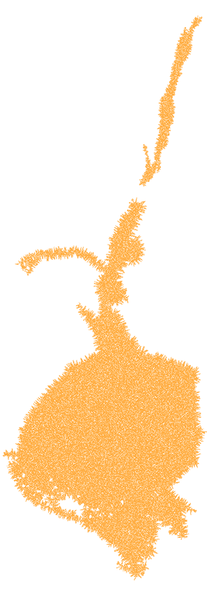
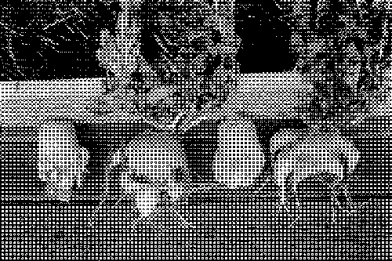

Hautanauris oli suomalainen vanhanajan herkku aikana, jolloin karamelleista ja muusta makeasta ei osattu edes haaveilla.
Vuorokauden mittaisen ainutlaatuisen valmistuksen aikana nauriit kypsyivät mystisissä naurishaudoissa tulikuumien kivien loimussa, jonka ansiosta niistä kypsyi suussasulavan makeita. Kun hartaasti odotettu naurishaudan avaaminen vihdoin koitti, käsin kosketeltava jännitys laskeutui koko pitäjän ylle. Olihan sen avaus usein suurjuhla, jota vietettiin koko kylän voimin.
Mutta kuitenkin, hiljalleen ja vääjäämättä, tuli peruna. 1800-luvun lopulla se syrjäytti kaiken tieltään, ja hautanauriit, nuo herkulliset aarteet, vaipuivat unholaan. Niiden valmistustapa, joka oli kulkenut sukupolvelta toiselle, alkoi jäädä historian jalkoihin. Jäljelle jäivät vain hylätyt hautakaivannot ja unohduksen katkeruudesta käpristyneet nauriit, jotka ajan hiekka hiljaa nielaisi
syvemmälle
ja
syvemmälle
maan uumeniin.